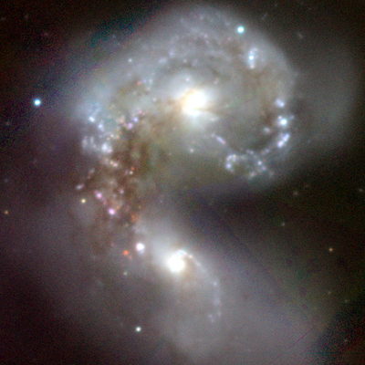
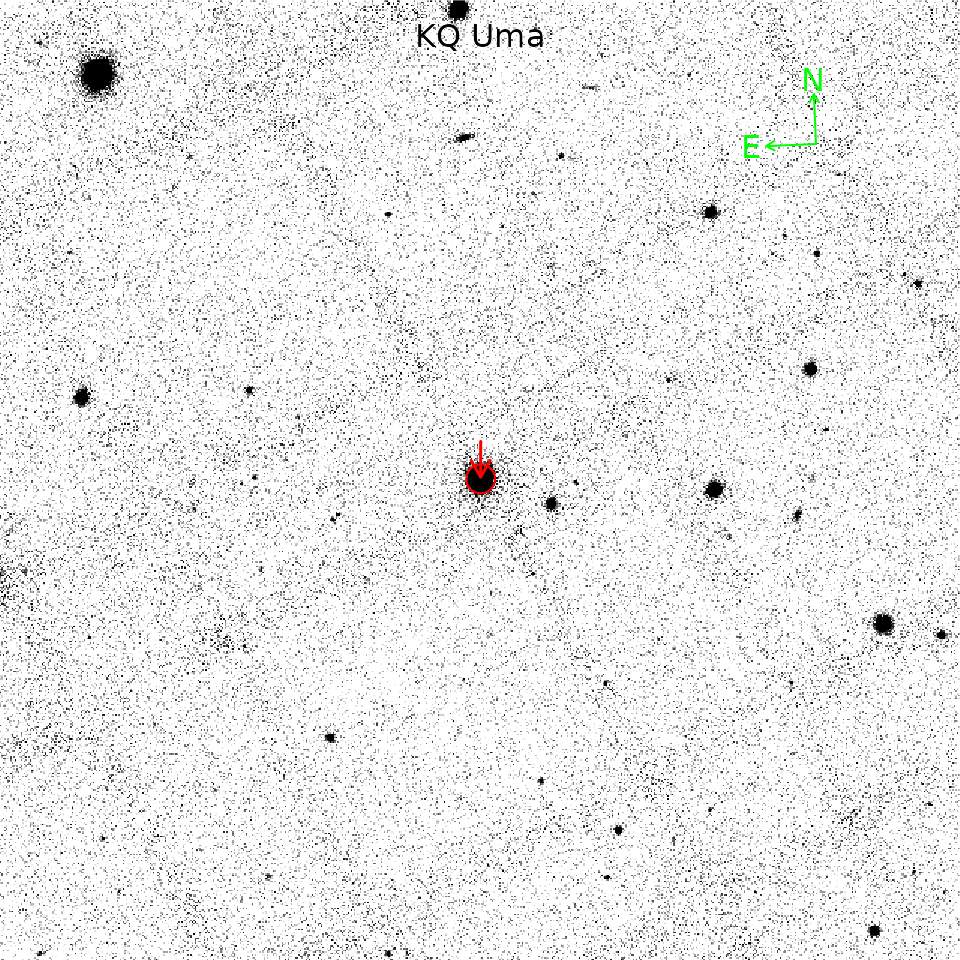

library(panstarrs)
library(magrittr)
library(magick)
#> Linking to ImageMagick 6.9.10.23
#> Enabled features: fontconfig, freetype, fftw, lcms, pango, webp, x11
#> Disabled features: cairo, ghostscript, heic, raw, rsvg
#> Using 2 threads
library(FITSio)
library(celestial)
#> Loading required package: RANN
#> Loading required package: NISTunits
#> Loading required package: pracma
#>
#> Attaching package: 'pracma'
#> The following objects are masked from 'package:magrittr':
#>
#> and, mod, or
library(magicaxis)
ps1_image_color(ra = 180.4721, dec = -18.87694, format = 'png', size = 600) %>%
magick::image_read() %>%
magick::image_resize("400x400")
coords <- ps1_mast_resolve('KQ Uma')
coords
#> $ra
#> [1] 139.3343
#>
#> $decl
#> [1] 68.63514
img_url <- ps1_image_url(ra=coords$ra, dec=coords$dec, size = 1280, filter = "r", format = "fits")
fits_obj <- FITSio::readFITS(img_url)FITS image headers use the obsolete PC001001, PC001002, etc., keywords for the WCS. We should fix (add some keywords to headers) it to plot right using magicaxis package
fix_header <- function(header) {
# FITSio --> obj$hdr
is_header_ok <- any(grepl("CD1_1", header))
if (is_header_ok) {
return(header)
} else {
PC001001 <- header[which(header == "PC001001") + 1] %>% as.numeric()
CDELT1 <- header[which(header == "CDELT1") + 1] %>% as.numeric()
CD1_1 <- (PC001001 * CDELT1) %>% sprintf(fmt = "%.14e", .)
CD1_2 <- "0"
CD2_1 <- "0"
PC002002 <- header[which(header == "PC002002") + 1] %>% as.numeric()
CDELT2 <- header[which(header == "CDELT2") + 1] %>% as.numeric()
CD2_2 <- (PC002002 * CDELT2) %>% sprintf(fmt = "%.14e", .)
start_i <- which(header == "CDELT1") - 1
end_i <- length(header)
# header1 <- header[1:start_i]
# header2 <- header[start_i:end_i]
header <- c(
header,
"CD1_1", CD1_1,
"CD1_2", CD1_2,
"CD2_1", CD2_1,
"CD2_2", CD2_2
)
return(header)
}
}It is example how to make a guidance plot. You should wrap it in your function for best practice.
oma_old <- par('oma')
mar_old <- par('mar')
par(oma = c(0, 0, 0, 0), mar = c(0, 0, 0, 0))
# Convert source coords from (RA, DEC) to image coords (X,Y)
src <- celestial::radec2xy(
RA = coords$ra,
Dec = coords$dec,
header = fix_header(fits_obj$hdr)
)
# Plot image
magicaxis::magimage(
fits_obj$imDat,
asp = 1,
flip = T,
stretch = 'log',
type = 'quan',
lo=0.6,
hi = 0.99,,
grid.lwd = 0,
axes=F)
# Add compass to image
magicaxis::magimageWCSCompass(header = fix_header(fits_obj$hdr))
# Add red circle around our source
points(x = src[1],
y = src[2],
cex = 2,
col = "red",
lwd = 1)
# Add arrow to point out on our source
arrows(x0 = src[1],
y0 = src[2] + 50,
x1 = src[1],
y1 = src[2]+2.5,
length = .1,
lwd = 1.5,
col = 'red')
# Add text to picture
text(x = ncol(fits_obj$imDat)/2,
y = nrow(fits_obj$imDat)-50,
label = 'KQ Uma')
par(oma = oma_old, mar = mar_old)